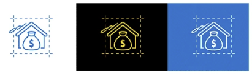
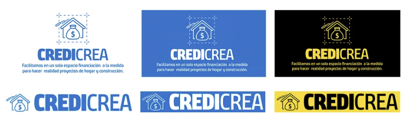

un facilitador bancario para clientes Hogar y PRO
un facilitador bancario para clientes Hogar y PRO
Diseño de una herramienta de financiación que conecta a los clientes de Homecenter y Constructor con opciones de crédito de distintos bancos para sus proyectos de remodelación y construcción, en un solo espacio pensado para cada perfil de consumidor.

El reto: financiar proyectos de hogar y construcción
Un solo espacio para que cada cliente encuentre su crédito, con el banco de su preferencia.
“Diseñar una herramienta de financiación para los clientes PRO y Hogar de Homecenter y Constructor que facilite la obtención de un crédito para quienes necesitan impulso en sus proyectos de remodelación o construcción.”

Cliente Hogar · Tus Proyectos
Personas que remodelan su casa y buscan un respaldo bancario claro. Línea de crédito a largo plazo para la construcción de sus proyectos de hogar.
Cliente PRO · Capital de Trabajo
Constructores y contratistas del Círculo de Especialistas. Financiación exclusiva para socios especialistas que ayuda al crecimiento de su negocio.
Investigación del sector bancario
El principal objetivo fue sumergirnos en el sector bancario para conocer su comportamiento digital y la manera como nuestro target interactúa con él, además de conocer más a quienes serían nuestros consumidores y enfocar en ellos la propuesta.

Nuevas pautas de consumo: hay un claro interés por entender al consumidor y empatizar con él.
Movilidad: ha sido fundamental para que el sector continúe relevante en el mercado.
Atención al cliente: es uno de los puntos más polémicos, porque gran parte del negocio se basa en ella.
Confianza: Banco Santander y BBVA son percibidos como los bancos más serios, consolidados y seguros.
- check_circleLenguaje claro para el usuario.
- check_circleEstética general que aporte sensación de claridad, limpieza y utilización de colores suaves.
- check_circleElementos que faciliten la navegación del usuario dentro del producto.
Definición: dos perfiles de usuario
Tras el análisis de los apartados anteriores y sus conclusiones, el producto debía cumplir una serie de objetivos que optimizaran el servicio para cada usuario.

“Prefiero confiar en mi criterio antes que en la incertidumbre de los bancos”

“El banco es mi respaldo para remodelar, aunque siento la presión financiera”
De la notificación a la aprobación
El cliente recibe un mensaje push, solicita el crédito y completa un formulario. Se evalúa al cliente y, si está preaprobado, se ejecuta el motor de riesgo; después ve los bancos y sus posibles cupos, continúa el proceso de solicitud con el banco y recibe el mensaje de aprobación.
Style Guide: dos identidades, un mismo sistema
Con todos los objetivos establecidos y los wireframes en baja fidelidad, desarrollé la Style Guide: una paleta azul para el cliente Hogar, una paleta amarilla y negra para el cliente Constructor y una escala de grises compartida.
Prototipado
Con todos los objetivos establecidos y los wireframes en low fidelity, desarrollé la Style Guide:
Colores
weight: 400
weight: 700
Primarios Hogar
Azules institucionales que transmiten calma y confianza para el crédito del hogar.
Primarios Constructor
Amarillos y negro de alto contraste para el perfil PRO y el Círculo de Especialistas.
Tipografía Lato
Lato Regular ($font-primary-regular) y Lato Bold ($font-primary-bold) definidos como tokens.

Isotipo
Una casa y una bolsa de dinero resumen la propuesta: financiar proyectos de hogar. Se usa sobre blanco, negro y azul.

Versiones del logotipo
Versión principal con descriptor y versión horizontal, en la paleta Hogar (azul) y en la paleta Constructor (amarillo y negro).
Librería de iconografía lineal en SVG: navegación, acciones, comercio y estados (confirmar y cancelar).

Diseño de átomos hasta componentes
Los elementos de la interfaz se construyeron como componentes reutilizables que cambian de identidad según el perfil del cliente.

Cabeceras
Variantes azul (Hogar) y amarilla (PRO) que mantienen la misma estructura de navegación.
Tarjetas expandibles
Tarjetas de tipo de crédito, “Tus Proyectos” y “Capital de Trabajo”, que despliegan sus beneficios.
Selector de bancos
Opciones con estados por defecto, seleccionado y deshabilitado, junto a los logos de los bancos aliados.
User Flow en alta fidelidad
Posteriormente hice el prototipo en alta fidelidad, en el que el usuario se sentiría acompañado en todo momento a lo largo del recorrido por la web, al ofrecerle diferentes opciones de crédito en un mismo espacio especializado en su perfil de consumidor.


Prototipo final: dos flujos para dos clientes
El mismo recorrido adopta la identidad de cada perfil: azul para Hogar y amarillo para el Círculo de Especialistas.


Credicrea en vivo en homecenter.com.co
El producto lanzado acompaña hoy a los clientes Hogar paso a paso: desde la solicitud del crédito hasta el pago de su compra.